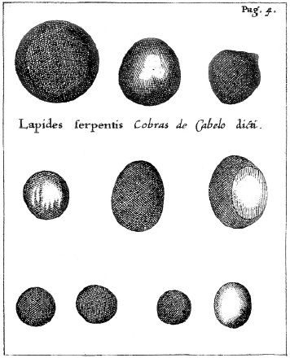

ŞEKİL 38. Francesco Redi’nin Experimenta circa varias res naturales speciatim illas quae ex Indiis afferuntur (Özellikle Hindistan’dan Getirilenler Olmak Üzere Değişik Doğal Nesneler Üzerine Deneyler) (Amsterdam, 1685) adlı eserinden birkaç yılantaşı örneği (bu eserin orijinali 1671’de İtalya’da yayımlanmıştır).84
Almanya’da doğan ama otuz yılı aşkın süre İtalya’da yaşayan Athanasius Kircher (1602-1680) “Cizvit Derneği” (“Societas Jesu”) üyesi olup Papalık ile Collegio Romano’daki Cizvit tarikatının Aristotelesçi doğa filozofları arasındaki köprüyü oluşturmaktaydı. Kircher, aynı zamanda Collegio Romano’daki Cizvit Müzesi’nin (“Museo Kircheriano”) kurucusu ve müdürü idi. Onun en önemli muhalifi olan Francesco Redi (1626-1698) ise Toskana’lı olup Floransa’daki Medici sarayının sadık hizmetkârı idi. Medici sarayı, Galileo Galilei’ye (1546-1642) ve Cizvit-karşıtı kesime sadakatle bağlı bir merkez konumundaydı. Redi, çürümekte olan bir maddenin üzerinde ortaya çıkan kurtçukların “kendiliğinden üreme” yoluyla değil yumurta ya da tohum şeklinde dışarıdan geldiklerini öne süren bilgin olarak tanınır. Yılantaşları İtalya’ya, öncelikle Hindistan kaynaklı olarak 1650’lerde gelmeye başlamıştır.
17. yüzyıl gezi literatüründe [örneğin Jean-Baptiste Tavernier’nin (1605-1689) 1678’de Amsterdam’da basılan Six Voyages en Turquie, en Perse, et aux Indes (Türkiye, İran ve Hindistan’a Altı Yolculuk) adlı eserinde], yılantaşı üzerine bilgiler de yer almaktaydı. Arapça’da “hacer el-hayye”, Farsça’da “mâr mihre” olarak geçen yılantaşı yüksek değer verilen çok sayıdaki egzotik (yabancıl) ilaç arasında basit bir taş idi. Doğu gezisinden dönen misyoner ve tüccarlar çeşitli tipte hastalıkları tedavi edici böyle doğal ürünleri Batı’ya aktarmışlardır. Onlar Hindistan ve Çin’in yerli halkının, yılan ısırmasının yarattığı zehirlenmeyi, ısırık yerinin üzerine yılantaşı yapıştırmak suretiyle tedavi etmeye çalıştıklarını, taşın zehiri tamamen emdikten sonra yara üzerinden kendiliğinden kopup düştüğünü ve kurbanı tamamen iyileştirdiğini belirtmişlerdir. Eğer bu taş daha sonra süt dolu bir kap içine konursa, emdiği zehiri süte vererek sütü yeşil bir renge dönüşüyor ve taş, tekrar tekrar aynı amaçla kullanılabiliyordu. Bir Arap yazara göre bu taş yılanın boyun kısmında bulunuyordu ve çoğu zaman beyaz inci renginde, kimi zaman da siyah-beyaz alacalı oluyordu.
Kircher ilk kez China monumentis illustrata (Resimlerle Çin Anıtları) (1667) adlı eserinde bu taşın harikalarından ve tıbbî gücünden bilgiler vererek söz etmiştir. Her ne kadar Doğu’da ve Uzakdoğu’da yaşayan Cizvit misyonerler, taşların, doğal tıbbî tedavinin bir bölümünü oluşturduğunu kabul etmekte idilerse de Kircher, oryantal tıp kuramlarına fazla yüz vermemiştir. Yine de yılantaşının etkinliğine ilişkin raporlara ilgi duymuş ve tek başına yaptığı deneylerle bu raporları doğrulamaya çalışmıştır.
Kircher, Çin’de misyoner olarak yıllarını geçiren Polonyalı Cizvit Michal Boym (1633-1704) ile yaptığı görüşmelerden hareketle çizimler yapmış ve China monumentis illustrata‘da Çin’in Quam-si bölgesi yerel Brahmanlarının oraya özgü kobra yılanlarını nasıl yakalayıp onların kafatasından yılantaşını cerrahi işlemle nasıl çıkardıkları konusunda bilgi vermiştir. Başka bir Cizvit misyoneri Heinrich Roth (1620-1667) ise raporunda, bu hayret verici taşın doğal yolla oluştuğu kobra cinslerinin nasıl tanınabileceğini yalnızca Brahmanların bildiğini belirtmiştir. Boym, Kircher’e Brahmanların, yılanların baş, karaciğer ve dişlerinden hazırlanan bir karışımdan, aynı derecede etkili başka taşlar da ürettiklerini, onların bu yapay taşların üretim reçetesini sıkı bir şekilde gizli tuttuklarını ve yüksek fiyatlarla satışı yapılan kimi sahte taşların ortalıkta bulunduğunu da belirtmiştir (ŞEKİL 39).84